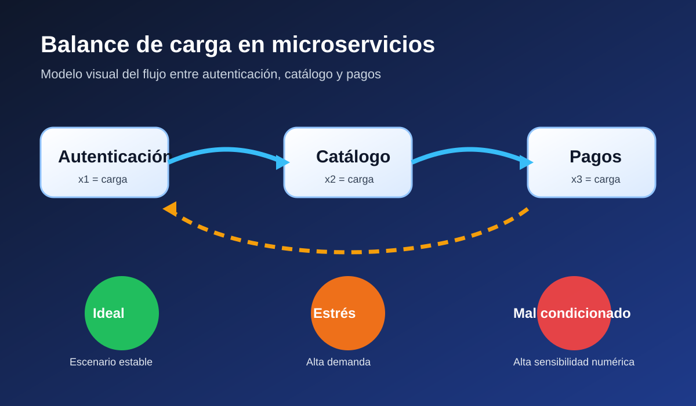

Vista gráfica del problema

La imagen resume la arquitectura planteada: las solicitudes externas atraviesan autenticación, luego llegan a catálogo y terminan en pagos, mientras el sistema puede operar en un estado ideal, bajo estrés o mal condicionado. Esta representación visual ayuda a conectar el modelo matemático con una arquitectura informática real.
Qué se modela
Se modela el equilibrio de solicitudes entre tres microservicios. Las variables son x1 para autenticación, x2 para catálogo y x3 para pagos. El vector b representa la demanda neta observada. A partir de esto, cada método resuelve el sistema lineal en los tres escenarios del proyecto.
Escenarios:
Caso ideal, caso bajo estrés y caso mal condicionado.
Caso ideal, caso bajo estrés y caso mal condicionado.
Páginas del proyecto
LU Incluye Doolittle, Crout y Cholesky, con imágenes y gráficos.
Jacobi Iteraciones, convergencia, imagen del esquema y comparación final.
Gauss-Seidel Actualización secuencial con imagen explicativa.
SOR Factor de relajación ω y visual de aceleración del error.
Gradiente Conjugado Prec. Direcciones conjugadas, precondicionador e imagen geométrica. Comparación
Jacobi Iteraciones, convergencia, imagen del esquema y comparación final.
Gauss-Seidel Actualización secuencial con imagen explicativa.
SOR Factor de relajación ω y visual de aceleración del error.
Gradiente Conjugado Prec. Direcciones conjugadas, precondicionador e imagen geométrica. Comparación